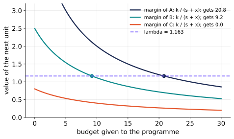

A training run prints a finite loss for 300 steps, then inf, then nan for ever. The code computes -log(softmax(z)[y]). What is the most likely cause?
| λ | ‖W‖ | held-out loss | accuracy |
|---|---|---|---|
| 0 | 16.22 | 0.071 | 1.000 |
| 0.001 | 11.10 | 0.113 | 1.000 |
| 0.01 | 4.90 | 0.273 | 0.980 |
| 0.1 | 1.70 | 0.586 | 0.880 |
| 1 | 0.39 | 0.927 | 0.787 |
Stable cross-entropy on the planted rows: 22.00. Gradient check: 9e-10.
3.70 at step 50, 16.22 at step 2,000. Smallest Hessian eigenvalue: about 0 plain, 0.01 with λ = 0.01.
Maximise f(x) subject to g(x) = c. Moving along the constraint cannot improve f, so ∇f is parallel to ∇g:
∇f = λ ∇g and g(x) = c
Equivalently: set the derivatives of f − λ (g − c) to zero.
| Maximise 2 log x + log y, x + y = 6 | value |
|---|---|
| conditions: 2 / x = λ, 1 / y = λ | x = 2y |
| constraint: 3y = 6 | y = 2, x = 4 |
| multiplier | λ = 0.5 |
If the best value is V(c), then dV/dc = λ.
One more unit of budget is worth about λ units of the objective, for small changes.
λ = 0.5: raising the total from 6 to 6.1 adds about 0.05 to the best value. Its units are the objective's units per unit of the constraint.
A training team's best accuracy under a compute limit of 100 hours has multiplier λ = 0.002 accuracy points per hour. The limit is cut to 90 hours. What should the team expect?

Each funded programme gets x = k/λ − s: where its margin meets λ.
C's margin at zero is 0.8, below λ = 1.163: its first unit is worth less than the last unit anywhere else, so x_C = 0.
v = x + η ∇f(x): an ordinary gradient step.x = project(v): the nearest point with x ≥ 0 and sum = budget, which is max(v − θ, 0) for one θ.Too small a step crawls; too large a step overshoots and never settles. Both solutions should agree; if they do not, one of them is wrong.
At the optimum of an allocation, λ = 1.5. A fourth programme has margin k / s = 1.2 at zero budget. What should it receive?
One number that is easy to count and maximise. The optimiser does exactly what it is told, including leaving out whoever the number does not see.
A floor, or weights by need, changes the answer. Which one, and how much, is policy: the mathematics prices it, it does not choose it.
The analyst proposes options with their prices; the finance officer approves the budget; the programme lead decides the weights.
An analyst finds that adding a floor for two programmes costs 0.6 units of the objective per unit of budget. Which next step keeps the duties separate?
labs/problem_sets/PS8.py.cd labs
uv run python problem_sets/check.py PS8At the optimum every funded option has the same marginal value, λ.
The best value moves by about λ per unit of the constraint.
The analyst prices the options; the people accountable choose.
Hand in Problem set 8. The capstone brief is in labs/capstone/BRIEF.md: a two-layer network trained with your own engine, every run reported.